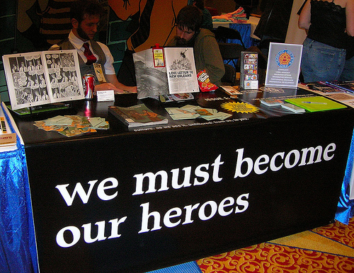

Tuesday, February 27, 2007
FASHION ADVICE FOR HOBNOBBING WITH NEOCONS. You should definitely go with the Gadsden snake, Jim. If you wear that Arabic Al-Jazeera pin, you might end up needing this fashion advice from Patty Neill.
I'm so glad I don't have to hang out with the people Jim Bovard has to cozy up and cocktail with.
Posted by Claire @ 11:59 AM CST [Link]
IN CASE YOU EVER WONDERED what happens to all those items the TSA steals from you at the airport ...
(Big surprise; they benefit the state.)
Posted by Claire @ 08:45 AM CST [Link]
THE REBELFIRE SONG "JUSTICE DAY" is now on Google Video thanks to creator Velojym. This is his first video, created just days after his first baby came home from the hospital. "Mr. Mom" has more ambition than I'd have at that point.
ADDED: And here's the YouTube link for the video for those (like me) who have trouble accessing Google videos or those (like me) who want to watch & listen twice. :-)
Nice job, Velo! And it was good to hear that music again. It's more stirring and powerful than I remembered.
Posted by Claire @ 08:42 AM CST [Link]
Monday, February 26, 2007
AN OSCAR FOR HYPOCRISY? So asked Simon Jester as he sent along this story about Al Gore's home energy use. Of course it's no surprise that Gore, that famous liar and scion of a political family, lives a "do as I say, don't do as I do" lifestyle. But this is pretty funny, coming the day after his hot-air documentary won the Academy Award:
The average household in America consumes 10,656 kilowatt-hours (kWh) per year, according to the Department of Energy. In 2006, Gore devoured nearly 221,000 kWh—more than 20 times the national average.
Last August alone, Gore burned through 22,619 kWh—guzzling more than twice the electricity in one month than an average American family uses in an entire year. As a result of his energy consumption, Gore’s average monthly electric bill topped $1,359.
Since the release of An Inconvenient Truth, Gore’s energy consumption has increased from an average of 16,200 kWh per month in 2005, to 18,400 kWh per month in 2006.
Posted by Claire @ 09:34 PM CST [Link]
SEX! And now that I have your attention, let me add that the new Hardyville column, "Monkey-Fu, Part VI, Sex and Motherhood," is online. In this episode, Charlotte Carolina learns some things she'd really rather not know about her darling daughter. And about her helpful public servants.
Posted by Claire @ 01:58 PM CST [Link]
Sunday, February 25, 2007
BOVARD ON THE BUSHEVIKS' PLANNED NUKING OF IRAN: "'Liberating' Iran; Enslaving the USA."
The Bush administration is reportedly considering the use of tactical nuclear weapons against suspected Iranian nuclear facilities. Many people have commented on how the U.S. military is already overstretched and cannot afford another major war. But little attention has been focused on how the American political system is also at the breaking point.
Good article. It originally appeared in Will Grigg's brand-new e-zine (which has the same name as his blog), Pro Libertate. Good luck with the new venture, Will. May you knock the neocon tyrants (and any other variety of tyrant) on their backsides.
Posted by Claire @ 06:47 PM CST [Link]
THIS WAS ENTIRELY PREDICTABLE back when Congress "reformed" welfare:
The welfare state is bigger than ever despite a decade of policies designed to wean poor people from public aid.The number of families receiving cash benefits from welfare has plummeted since the government imposed time limits on the payments a decade ago. But other programs for the poor, including Medicaid, food stamps and disability benefits, are bursting with new enrollees.
The result, according to an Associated Press analysis: Nearly one in six people rely on some form of public assistance, a larger share than at any time since the government started measuring two decades ago.
Only surprise is that it took anybody 10+ years to notice.
Posted by Claire @ 06:39 PM CST [Link]
Saturday, February 24, 2007
WOUND CARE. SurvivalBlog has a very good article by an ER doctor. The article is written from a survival/TEOTWAWKI perspective, though its basic procedures would be handy for anybody's home medical manual.
(Thanks to ET for the heads-up.)
Posted by Claire @ 01:54 PM CST [Link]
Friday, February 23, 2007
CHILDHOOD IMAGINATION: THE LATEST DEADLY THREAT TO SAFETY. So says the Department of Health and Human Services. Via The Onion, that is. :-)
Although the exact number of child fatalities connected to an active imagination is unknown, experts say the danger is very real. According to a 2006 estimate, children who regularly engage in imagination are 10 times more likely to suffer injuries such as skinned knees from mythical quests, or bruises and serious falls from the peak of Bookcase Mountain.
Posted by Claire @ 12:29 PM CST [Link]
I WAS FEELING SOME SCHADENFREUDE YESTERDAY (never a good sign) as the last of Jim Zumbo's sponsors abandoned him.
Actually, there was no need to wait for the last of them to speak up. By Thursday morning, there was nothing left to sponsor. His TV show, his columns ... all canceled, all gone. A 42-year career as an outdoor writer and personality was over, thanks to one ignorant, inflammatory anti-gun blurt and his "digging the hole even deeper" apology.
The sponsors had done the right thing, both for their own economic interests and (for once) for freedom. But what a devastating swoop it was. What a lightspeed coup angry gun owners had pulled. Once again we watched the Internet's Godzilla-like power to destroy.
Then Ted Nugent, a long-time friend of Zumbo's, announced that Zumbo would come to his discussion forums to answer questions and perhaps to begin rebuilding some of those torn up bridges. Zumbo came on and made a far more meaningful apology. Then ... nothing. [more]
Posted by Claire @ 10:14 AM CST [Link]
Thursday, February 22, 2007
YOU MIGHT THINK THAT MEDICAL INFORMATION IS PRIVATE
The munificent fedgov has assured us that our privacy is protected. The HIPPA law says so. You can read it yourself: download the full text of the regulation -all 2.6 MB of it, and wade right in.
Silver here. I didn't read it all, but I read enough. HIPPA requires notification when records are disclosed, not privacy. In practice, when you come to a doctor's office for the first time, or any time to a hospital, you will given a form to sign. Read it carefully, and you'll find that you are consenting to disclose your personal medical records to pretty much anyone.
The regs cover only records kept by health care providers, health plans, and health clearinghouses - and only if the facility maintains and transmits records in electronic form. Doctors using paper records but who use fax, email, or telephone to transmit prescriptions have been informed by some thugs agents of the federal government that they fall under HIPPA.
What you won't see discussed is the fact that prescription records are NOT private. Dr. Deborah Peel discusses this in an eye-opening article on NEPSI - the National ePrescribing Patient Safety Initiative. (Hey, it's FREE! Free software! For doctors to use in writing prescriptions!)
There is a lively trade in prescription data. Dr. Peel reports that "market intelligence firm IMS Health reported revenues of $1.75 billion in 2005 solely from the sale of prescription records, primarily to drug companies."
It is essentially impossible for any American to have a private prescription. [more]
Posted by Silver @ 06:32 AM CST [Link]
Wednesday, February 21, 2007
DEAR ASTEROID: Some words of advice on which targets to pick as you zoom in to smack the Earth, come Doomsday.
:-) Don't we wish.
Posted by Claire @ 12:13 PM CST [Link]
"WHAT COULD BE MORE AMERICAN?" asks Katherine Mangu-Ward in a Reason article about Bank of America's new plan to issue credit cards without SSNs or credit checks. The article also contains more detail on the plan for those who've been asking how SSNless accounts can meet all the fedgov's new "Every Citizen a Suspect" requirements.
Posted by Claire @ 10:13 AM CST [Link]
Tuesday, February 20, 2007
DOING THE RIGHT THING. If you're a gun person, you probably know all about this weekend's Jim Zumbo flap.
Mr. Famous Outdoorsman, who's been writing about guns and hunting for 42 years, spewed forth an ignorant blurt about "terrorist assault rifles" that put him straight into the Brady camp. After several thousand howls of protest, he followed up with an alleged apology that made matters even worse. Said apology never actually apologized for calling millions of us "terrorists." It simply said (I paraphrase): a) I was having a bad day, b) Ted Nugent's still willing to hunt with me, c) how can you hate me when I'm a member of the NRA?, d) how can you question my patriotism when I fly my American flag every day?, e) I help disabled veterans, and f) if you hunt or shoot, I'm the very best friend you could possibly have.
Seriously. Our Very Best Friend. Never mind that he still believes we're all "terrorists." Never mind that the Brady campaign had already picked up his words and was busily battering us with them. (The link above will take you to all parts of the Zumbo fumble. The original blog entries and the thousands of comments they generated are gone -- more below on that -- but Google still has them in cache. Here's the cached version of Zumbo's original screed. Here's the cache of his self-serving non-apology.)
This arrogant ass sold out millions of gun owners -- sold out freedom itself -- and did it without apparently the slightest concern or understanding that he was, as one commentator put it, "deliberately poking a hole in the life raft we're all floating in."
But this isn't about Zumbo. This is about the companies that made Zumbo possible. The good, the bad, and the ugly. [more]
Posted by Claire @ 01:57 PM CST [Link]
Monday, February 19, 2007
Let me start out by saying I love technology. More accurately, I love medical technology. I love doctors and Big Pharm, and all those evildoers. You know why? Because they make my life better.
Debra here. I'm horribly, hideously, terribly nearsighted (-6.5, for those of you who know what that means). I've worn glasses since I was 9 years old. Glasses, for you *&^*^ normies that don't have to wear them, suck.
Enter technology.
You've all heard of Lasik, of course. Laser-beam your eyeballs and you've got perfect vision. Unless, of course, your corneas aren't thick enough. Or (like some people whom we won't name) you're such an incredible infant about pain that even the relatively mild discomfort of the procedure flips you out and they have to abort the procedure after putting a hole in your eye. Then you're out of luck, right?
Not so fast. There's a new procedure called Phakik Intra Ocular Lens implant. Based on cataract surgery, this procedure slices open the eyeball and implants a contact lens behind your pupil.
And it's painless. Completely and totally painless, even though you're wide awake.
How do I know? I just had it done on Saturday. The following morning, I could see as clearly out of my implant eye as I could wearing the newest, freshest pair of contact lenses you can imagine.
It's a wonderful thing.
Because you can only get one eye done at a time, I have to go back in two weeks to have the procedure done on my other eye. But knowing what to expect, I won't be nearly as nervous.
The best part is that now I can legitimately refer to myself as a cyborg. How cool is that?
Posted by Debra @ 04:07 PM CST [Link]
THOUGH IT HASN'T YET MADE IT OFFICIALLY INTO BHM'S INDEX, "Monkey-Fu, Part V" (in which Charlotte Carolina is driven ever closer to the trigger of chaos -- and in which, need I add, The Plot Thickens) is online.
Posted by Claire @ 09:49 AM CST [Link]
A NEW LIBERTARIAN KIDS' BOOK erupts this week. It's The Walton Street Tycoons by Jim Lesczynski (the man who made the Manhattan LP far more radical and interesting than you might expect such an outfit in such a place to be).
I haven't finished reading my review copy yet. So here's Powell Gammill's take on the book. And here's what L. Neil Smith has to say. (Hint: He compares it to a Heinlein juvenile.)
Happy reading! I've also just added this one to the Freedom Books for Children section of the Wolfesblog aStore.
Posted by Claire @ 09:27 AM CST [Link]
Sunday, February 18, 2007
THE BUDGET TRUCK RIFLE
Blogispondent Ian here. As I was out and about this weekend, a buddy and I happened to stop in this little antique store that does a modest volume of gun sales. As we were poking around the inventory, the owner mentioned that one particular rack was all old inventory that he just wanted to get rid of - so if we were interested in anything there, today was Deal Day.
I hemmed and hawed over one particular little carbine, a mildly sporterized M/38 Carcano. It just looked lonely, and the price tag of $75 appealed to my wallet. I decided to offer the shopkeeper $50. Hard to go wrong with a $50 rifle, right? Well, the gentleman's response took me aback a bit. He said, "No. But I'll take $35 for it." Well, hot dang! I said I could handle that.
 [more]
[more]
Posted by Ian @ 07:32 PM CST [Link]
Saturday, February 17, 2007
DANIEL CASTILLO, AGE 17. SHOT IN THE FACE. KILLED. A one-year-old baby was nearby. A young mother was screaming. What kind of conscienceless murderer would do this, you might ask? What kind of brutal gangbanger? What kind of monster -- and why aren't the police hot on his trail?
But no, you're a Wolfesblog reader. You don't even have to ask. You already know who did it. You know why detectives aren't rushing to arrest the culprit who shot an innocent teenager in cold blood. You know the justification, too. Somebody in the house or associated with the family was accused by yet another "confidential informant" of selling recreational drugs.
Radley Balko has been reporting for the last few days on the death of Castillo. The mainstream media, as usual, is ignoring this latest police-state outrage. Their capacity for Not Getting It (even after their brief flurry of Kathryn Johnston indignation) is a national disgrace.
Posted by Claire @ 11:58 AM CST [Link]
THE U.S. WILL HAVE ONLY 5,000 TROOPS IN IRAQ BY DECEMBER 2006. And Iraq will have a stable government. All you have to do is follow the Yellow Brick Road. So says a 2002 Pentagon PowerPoint presentation recently obtained through FOIA.
It might not be as amusing as a YouTube video, but if you're in just the right mood, it might provide a few bitter chuckles. Seems Our Glorious Leaders weren't merely trying to delude us, but each other.
Posted by Claire @ 09:39 AM CST [Link]
Friday, February 16, 2007
ITALY HAS FINALLY INDICTED 26 AMERICANS, mostly CIA agents, for the kidnapping and "extraordinary rendition" of a Muslim from Italian soil. In the name of "freedom," drones of the U.S. government grabbed the man and sent him off to Egypt to be tortured.
Italy's indictment is a token gesture; the American kidnapper-torturers have fled like the rats they are, and the Italians aren't asking George W. Bush to send them back (yeah, like that would ever happen). But Europe has obviously had it with the our cruel and delusional neocon regime. Switzerland has recently made its own token gestures to stop U.S. barbarity. Too bad it's so little, so late.
China, Russia, and India are making the first tentative attempts to balance runaway American superpower.
What hath George W. Bush wrought?
What kind of world is it in which one congenital moron could ever be allowed to have such an impact?
Posted by Claire @ 07:24 PM CST [Link]
GOT A SON, DAUGHTER, NEICE, NEPHEW, grandchild, neighbor, godchild -- or anybody else who's roughly between the ages of 9-14? Thunder has just added a large selection of books for the curious-minded kid in the Wolfesblog Amazon.com aStore. Just click on "Books" in the right-hand box, then click "Childrens."
Our selection now includes the explicitly free-market anarchist "Princess Navina" series, several new titles by Lois Lowry (in addition to her super-fine freedom story The Giver, beloved of adults and teenagers alike), and Ken Schooland's Adventures of Jonathan Gullible in both English and Spanish.
Of special note (and thank you Dana and Katherine for the heads-up) is the "Shadow Children" cycle -- a series of seven books that take place in a near future in which the government has decreed that couples can have no more than two children. "Illegal children" and those who dare to bear them or protect them are subject to a swift, merciless death penalty. [more]
Posted by Claire @ 01:28 PM CST [Link]
HM. SO THE PASSENGERS AND CREW beat the crap out of the hijacker and disarmed him so "security forces" could haul his useless carcass away. And an armed citizen stopped the deadly rampage at Trolley Square.
The media makes much of the fact that the Trolley Square hero was an "off-duty officer," repeating the phrase four, five, six, or more times in some stories. Few mention that the mall has a rule against carrying firearms. Had Ken Hammond, in his capacity as an armed citizen, obeyed the rules and left his gun outside, who knows how many more would have died? But we can't say that, can we? Can't say that an individual, disregarding an unsafe rule, took action. Must say that it was a policeman who saved the day. Just as it was security forces who captured the hijacker.
(Thank you, CC, and nice to hear from you again.)
Posted by Claire @ 12:58 PM CST [Link]
Thursday, February 15, 2007
I'm sooo glad I pay my property taxes.
It's me, PSM. Hi.
So winter finally arrived here in New Hampshire, bringing with it about twenty inches of snow. I spent a good hour and a half anyway yesterday morning shoveling out the driveway. I didn't mind it too much as it was light, powdery snow, not the heavy wet stuff we usually get. Still, the hardest part is always the furrow the snowplows leave at the streetside. That stuff is always laden with sand and much heavier and compacted. Removing about twenty feet of furrow took longer and more effort than the whole rest of the driveway. Felt good, though.
In the afternoon I figured I had better go out and shovel again, as it was still snowing. Even though the town where I live is the epitome of rural New England Nowheresville, we do still have a sidewalk, and during periods of snow that sidewalk is cleared by a little Bobcat lookin' thing with a snowblower on the front of it. And when I went out in the afternoon, you know, just to do a little supplementary shoveling, I found that Mr. Sidewalk Guy had been through, and had blown about ten cubic yards of heavy, sandy, compacted snow onto my property, completely plowing me in! [more]
Posted by Penguinsscareme @ 09:33 AM CST [Link]
Wednesday, February 14, 2007
BEEN SAVING UP SEVERAL NEWS ITEMS the last few days, intending to write a coherent blog entry from one or two of them. Well, so much for coherent. It's time to just unload them on you wholesale:
RFID dust. Yep, Hitachi has developed it. Flecks smaller in diameter than a human hair. Small enough to go into your food, your meds, your gunpowder, your ID card -- perhaps even the air around you?
What do you do when the cops are among those speeding dangerously past your house? Perhaps you set up radar. And a speed camera. One couple did. They caught their cop in action. And repeatedly complained to his bosses. Now guess ... take exactly one guess ... which party is in trouble with the law?
Has the peace movement sold out, body and soul, to the Democrats? One writer notes that neither Naderites nor libertarians are welcome any more. (Though as Rational Review News noted when they linked to this article, the author is wrong about Nader being the "only" antiwar candidate in the 2004 presidential race.)
The real "tax freedom day." I see an analysis like this every few years, then lose track of it. Official "tax freedom" day is measured solely in the raw amount of taxes that come out of your pocket. The cost is of course much greater and includes the price of regulation, the increased amounts you pay for goods and services, etc. This article doesn't try to put a precise figure or date on it. But it does identify some of the other factors involved.
Finally, just a little personal preference. I like stick-shift vehicles. Wouldn't own an automatic. One of many reasons to hang on to the old Toyota (though it'll have been sitting broken & motionless two months tomorrow) is that sticks are becoming a rarity. I like 'em for all the reasons laid out in this article. It's great to see the historic and practical "standard transmission" defended.
Posted by Claire @ 08:15 PM CST [Link]
Tuesday, February 13, 2007
GOOD NEWS FOR UNDOCUMENTED (OR JUST PRIVACY LOVING) AMERICANS. Bank of America is rolling out a credit card requiring no SSN.
Yes, the media propaganda is making it sound as if the bank is catering strictly to "illegal immigrants." And perhaps that's the idea. (The plan is beginning in Los Angeles, in the heart of Aztlan.) Never mind; it's a boon to freedom Outlaws, victims of identity theft, and privacy-lovers in general, too.
No, I don't think it's a brilliant idea to rush out and get into debt. But you know how many things these days, from renting a car to buying on line, are hard, if not impossible, to do without A Card. So get it, use it, pay it off monthly. Never ever did I think I'd be saying, "Good for the BofA." But what the heck. Good for the BofA!
And wouldn't it be interesting if those "illegals" whom some of us hate so bitterly became a major factor in ending the last decade's attempt at centralized federal ID control?
Posted by Claire @ 10:02 AM CST [Link]
Monday, February 12, 2007
IN HARDYVILLE webs are spun and wheels spin a little faster. The power of monkey-fu carries the Carolina family closer to chaos -- and therefore closer to discovering reality. Rep. "Toad" O'Day, meanwhile, believes himself well in control of his own fate as he pushes the "Chip in Every Chicken" bill through the House.
Posted by Claire @ 09:07 AM CST [Link]
Sunday, February 11, 2007
THIS IS FROSTY, AN AUSTRALIAN CATTLE DOG PUP who spent her first six months shut in a horse trailer on a Midwestern farm. When temperatures plummeted into the minuses, neighbors who'd been sneaking in at night to feed the 15 or so dogs confined on the property (as I understand the story) took the responsibility of spiriting away the puppies and getting them into shelters. Later, neighbors and rescue groups persuaded reluctant "authorities" to confiscate the rest of the dogs. Many of the mother dogs had been chained in the open with freezing rain and snow falling on them.
The tale of how Frosty got from the bleak Midwest to the hills and forests of Cabin Sweet Cabin is one of small miracles performed by real human angels. The story was marred by the intervention of one demon -- whose name and evil works will be familiar to you.
[more]
Posted by Claire @ 10:46 AM CST [Link]
GLOBAL WARMING: A DELUSIONAL BELIEF SYSTEM in which the victims acknowledge that it is impossible to accurately predict the weather next week, but advocate the use of violence on the basis of weather forecasts for the next century.
Silver here. The parasite class just loves global warming; it gives them yet another tool to plunder the productive class. This tool is especially fine because the plunder can be plausibly confined to the most productive workers in states where the apparatus of compulsion and coercion (aka government) is most effective, while leaving those states with unexploited natural resources free to develop until they are rich enough to be worth robbing.
The shrillness was up a notch this week, with Ellen Goodman demonstrating Godwin's Law with her claim that "global warming deniers are now on a par with Holocaust deniers." Richard Branson, who makes a lot of money spewing carbon dioxide into the air via Virgin Atlantic, has offered a $25 million prize to the first person to concoct a plausible scam scheme to remove one billion metric tons of carbon gases a year from the atmosphere for 10 years.
The hubris of global warming fear mongers is remarkable. Climate is changing because it has always changed and always will. Climate change occurs on timescales that are long compared to human lifetimes, so most people can live in a comfortable illusion that climate is static. It is only an illusion; the earth has been much warmer and much, much colder many times in its history.
Global warming is a perfect example of what Anthony Campbell calls the Casaubon delusion, the tendency of the mind to search for all-inclusive answers. He points out that both religion AND science are susceptible. "The search for explanations is a normal and healthy function of the mind as a rule, but it can become abnormal and pathological if it is allowed to develop to excess. The problem arises when we push the desire for explanation too far, and impose our wishes on the world so as to make it conform to how we would like it to be." Sound familiar?
To think and talk seriously about global warming, much less propose the use of force (via regulations and taxes) or tinkering with the climate requires answers to a few basic questions:
[more]
Posted by Silver @ 09:16 AM CST [Link]
Saturday, February 10, 2007
THIS JUST IN FROM RICHARD CELATA:
On 2/8/2006, the Gov. filed a motion to voluntarily dismiss the instant civil forfeiture proceeding pursuant to Fed. R. Civ. P. 42(a)(2).Court so ordered the instant case is dismissed.
Sam E. Haddon
U.S.D. Judge
Still no criminal charges after all these months. And if the ATF can't even demonstrate its "right" to steal the Celata's stuff (which is relatively easy), you gotta wonder how they'd fare if they and their prosecutorial pals undertook the much harder task of proving Richard Celata guilty of a crime.
FOLLOW-UP. Hm. This may be another good news/bad news. The dismissal may have been a strategic one to prevent the asset-forfeiture case from somehow compromising or jeopardizing a pending criminal case. Nobody's sure what's really up yet.
Posted by Claire @ 12:46 PM CST [Link]
THE KILLERS OF KATHRYN JOHNSTON may soon face felony murder charges. But this is a classic example of governmental good news/bad news, as Radley Balko very perceptively reports.
Posted by Claire @ 10:20 AM CST [Link]
Friday, February 9, 2007
The Noob's got a new mommy and daddy!
Debra here. Shortly after I posted about finding a half-grown Rottweiler/German shepherd mix, I received a cautious email from a regular Wolfesblog reader who indicated he might be interested. He already had an older dog of the same mix. When his wife saw the photo, she said simply, "I want him."
The problem was that he lived A Considerable Distance Away, as Claire might put it. Actually, "considerable" is an understatement.
But let's face it -- dog people are nothing if not dedicated. Our hero drove all the way out here to pick up The Noob. I did offer to meet halfway, but he declined, modestly stating that he wanted to visit a friend in the area anyway.
I knew without a doubt that The Noob was going to the good life when the van pulled up, outfitted with portable kennel, doggie bed, toys, food & water, snacks ... you name it. Pics of his new home showed acres of tall trees, grassy fields, streams & ponds (hell, *I* wanted to be adopted at that point!) The fact that Mr. Hero turned out to be a darn nice guy in general was just icing on the cake.
Noob showed no fear or anxiety with his new daddy, sniffing around with interest, and jumping into the van -- and the portable kennel -- without hesitation when invited. (Meanwhile, my idiot Aussie -- whom we'd brought along for moral support -- was surreptitiously sneaking The Noob's snackies from the van when no one was watching...)
I've been getting updates on the Noob since he left. He was pretty freaked the first 24 hours, whining and anxious to the point of throwing up once. Fortunately, he's calmed down considerably. Which isn't to say he's letting Papa out of his sight for a minute -- they're attached at the hip last I heard. But I'm confident that once he settles into his new home and gets comfortable with his new parents and sibling, he should do just fine.
Thanks to everyone for their support in this, and special thanks to Mr & Mrs Hero. You guys rock!
Posted by Debra @ 05:12 PM CST [Link]
I SHOULD HAVE KNOWN BRIGHTER MINDS would already have covered the Up and Down class theory I wrote about yesterday. Much brighter minds. Wally Conger. Drawing on the work of Samuel Edward Konkin III. Drawing on the work of Murray Rothbard. Drawing on the work of Gabriel Kolko and others. With introduction by Brad Spangler.
http://agorism.info/AgoristClassTheory.pdf
This 38-page treatise on Agorist Class Theory is nowhere near as daunting as it looks. Very lucidly written and nicely put-together.
(Thank you to Brad Spangler and Mary Lou Seymour.)
Posted by Claire @ 06:33 AM CST [Link]
Thursday, February 8, 2007
I'VE JUST FINISHED THE NOVEL Snow Man by Carolyn Chute. This book reduced Ms. Chute from the darling of the literati to (as the best Amazon review puts it) "an unperson among the literary elite."
Why? Because (among other things), Chute paints a sympathetic portrait of a militiaman who has just assassinated a senator and plans, if he survives, to shoot another.
Robert Drummond, wounded member of Maine's Snow Men Militia, is hidden and nursed back to health by the second senator's wife and grown daughter. They find him strangely alluring -- yet baffling. Expecting a neo-Nazi "right-wing extremist," they discover that his personal heroes are leftist guerrillas and that his views often don't fit their preconceptions.
Here's a bit of dialog that sticks with me:
[more]
Posted by Claire @ 02:05 PM CST [Link]
NAKED LUST FOR POWER. Brad at McBlog warns of a possible new definition of federal crime.
Posted by Claire @ 12:51 PM CST [Link]
"THE FOLLOWING PARTIAL LIST OF IP BLOCKS are (sic) routinely used by the US government entities (supported by private contractors) to gain access to, to monitor, and in some cases, to destroy IT networks. Such activity is related to the US “Terrorist Surveillance Program.” Most of the registrants of the blocks listed below are not aware of these activities. Concerned network admins should examine traffic logs closely. A correlation of traffic from several of these IP blocks likely indicates that a network is under surveillance or has had access attempted by the US intelligence community and affiliated entities."
http://cryptome.org/ip-tla.htm
No comment.
(Thank you to J.D. Abolins and CASPIAN.)
Posted by Claire @ 12:25 PM CST [Link]
Wednesday, February 7, 2007
FOR CRYIN' OUT LOUD, THE GUY'S NAME IS KEITH URBAN. No, he's not the singer Keith Urban. He's the painter Keith Urban. But in a new low in abuse of intellectual property law, the other Keith Urban (Mr. Nicole Kidman) is suing him to try to steal the guy's domain name.
Mr. Kidman complains that Mr. Urban is violating his trademark by using his own name. This is even more ridiculous than when Starbucks sued Samantha Buck Lundberg over the name of her coffee shop. (At least in that case the products were similar.)
I believe in the rights of creators to their own work. But there's a line between protecting what you've labored over and merely using your power and the government's to try to beat up on somebody less powerful.
Posted by Claire @ 01:18 PM CST [Link]
MINORITY REPORT is coming true. An outfit in New Jersey has developed a covert iris-scanner. It can allegedly "read" your identity on the fly, without your knowledge or consent.
According to the article, the system has already been used in that great bastion of freedom, the United Arab Emirates. Can Boston, New York, or Mordor-on-the-Potomac be far behind?
Actually, I'll believe it when I don't see it. The article carries more than a faint tang of marketing hype. Could be another case of a company angling for big gummint bux when its product will never deliver on promises.
(News courtesy of privacy maven Richard M. Smith.)
Posted by Claire @ 10:02 AM CST [Link]
SO. WHAT I WANT TO KNOW IS when they shipped the $4 billion cash to Iraq, how come none of the roving forfeiture squads at the airport confiscated it? If it'd have been yours, mine, or the life savings of some guy named Pedro or Ahmad, they'd have snatched it in an itty-bitty heartbeat.
Three hundred sixty-three tons of FRNs. You'd think even a bottom-of-the-barrel DEA agent woulda found that suspicious. Not to mention lucrative. Instead? Well, if you've wondered where those Iraqi insurgents are getting their funding ...
Posted by Claire @ 09:54 AM CST [Link]
Tuesday, February 6, 2007
We're from the government - and you're not!
Raving Reporter Thunder here. Again.
Special thanks to TCFer Kirsten for posting this movie for us. It's a hoot!
If you have a YouTube account, feel free to vote for this movie. The makers have entered it into the Challenge the Status Quo contest and could use your support.
Posted by Thunder @ 08:19 AM CST [Link]
PRECISELY. If you're not worried about the fedgov's upcoming expansion of DNA collection (to be imposed by bureaucratic fiat on people arrested or "detained" by federal agents), consider what "detained" actually implies.
Yes, of course, for the moment we can all take comfort in the fact that it doesn't apply to Our Kind of People. Only those Other People; you know the ones I mean. The usual targets suspects, the ones least able to fight back.
Yet another example of land-mine legislation, hidden by Congress, discussed by no one until it was too late.
Posted by Claire @ 07:51 AM CST [Link]
Bush's approval rating sinking faster than the Titanic
Raving Reporter Thunder here.
It seems that Bush's approval rating is painfully low. Literally. It appears that more people approve of getting kicked in the crotch or stepping in dog poo than approve of Bush. Those of us that are actually interested in freedom have known this for years, but it is nice to see others agreeing.
Unfortunately, I don't think the poll is very accurate or even legitimate, but it sure shows our opinion accurately, doesn't it?
Posted by Thunder @ 07:41 AM CST [Link]
Monday, February 5, 2007
IF YOU'VE BEEN WONDERING WHERE RATIONAL REVIEW NEWS HAS GONE ... don't worry. With some luck, it'll be back tomorrow at its usual URL. Belatedly, you can still read today's RR News via the version published on the ISIL site.
The short version of the tale of RR News' disappearance over the last several days is: server problems. The longer version is: unresponsive customer service on a new hosting site. I just heard this from Mary Lou Seymour, who passed along a lengthy explanation from publisher Tom Knapp.
Because of "account suspended" messages on the RRN site, some people have jumped to the conclusion this situation involves unpaid bills. Rest assured, ML and Tom say that's not the case. Purely, though maddeningly, technical troubles.
RR News come home! We miss you.
Posted by Claire @ 08:58 PM CST [Link]
BEING SANS TV, I used to miss seeing the SuperBowl. Not for the game (snooooooze). But for the commericials. Oh, bless you, YouTube; the best part of the SuperBowl is now so easy to find. I loved "Moon Office" (despite the slight exaggeration of the laws of physics). But of course, for many reasons the Budweiser Dalmation ... er, spot is the winner in my book.
The Garmin "map monster" was a hoot. Coke's dream factory was lovely. The Kevin Federline satire was damn funny (though since I can't remember the advertiser it's hard to call it a great commercial). Emerald Nuts's spot with Robert Goulet takes the prize for just-plain-weird.
I was disappointed in a bunch of others. I know SuperBowl spots are expensive. But the really great, great SuperBowl commercials aren't 30 seconds or less. Love the long ones that tell a story like that Bud tale of the sad little non-Dalmation.
Posted by Claire @ 03:03 PM CST [Link]
IN THAT EVIL-RIDDEN LAND FAR FROM HARDYVILLE the dance of tactics begins.
Rep. "Toad" O'Day and high-school senior Tonio Carolina take steps down very different paths. Yet both will follow the influence of that strange discipline known (only to the monks of the Hilltop Hermitage and their student, Qwai Ching Paine) as monkey-fu.
Posted by Claire @ 10:50 AM CST [Link]
Sunday, February 4, 2007
SPEAKING OF BOVARD as I just was in my previous blog entry, here he relates moment on a plane when being squeezed in the middle seat between two strangers was hardly the most uncomfortable aspect of the trip.
The 14-year-old's final comment shows that the kid -- without knowing it -- knows more about the real purpose of Bushevik "freedom and democracy" than most people. Ugh.
Posted by Claire @ 09:48 AM CST [Link]

NOW, THAT'S A NICE PIECE OF TIMING. Minutes after Jim Bovard sends this picture with a motto that we can use on those discouraging days, I read about an ad hoc group of techies around the world leaping into heroic action to try to save one of their own.
Posted by Claire @ 09:42 AM CST [Link]
Saturday, February 3, 2007
EVERY TIME I SEE BUSH ASKING FOR ANOTHER $100 BILLION for some momentary uptick in his warmaking, I recall that John F. Kennedy presided over the entire country with smaller annual budgets than that. Butler Shaffer has a brief bit of trivia and a wry comment about that very thing.
Posted by Claire @ 09:42 AM CST [Link]
I COME FROM A LARGE FAMILY Five kids, two parents, seven in all.
Silver here. I was thinking about my extended family's finances. I earn my living in the free market. Every transaction is voluntary. My customers trade their money for my goods only because we both are better for the trade. If they don't like my goods or my prices, or I don't like their offer, no trade. I don't accept stolen money, aka tax money from government agencies or government grants. One sibling makes a living as I do, in the free market.
My parents live on Social Security. I know enough about what my father earned and when to calculate that he took out all his payments, plus interest, over 15 years ago. Since then, he and my mother have been getting money taken from working people.
One sibling works directly for Mordor, serves the empire and is totally dependent upon it. Two work for public schools, or as Vin Suprynowicz so aptly describes them, the reproductive organ of the state. None of these three siblings does anything remotely resembling free trade; every dime they get was stolen from someone else.
That makes two productive people and five parasites. What's interesting is that I know how much my free-market sib and I pay in taxes, and more or less what the others take. You know what? It balances. Two of us support five.
This isn't unusual. The Mogambo Guru recently noted that one out of seven workers is directly employed by the government, and it is the sole means of support for about a third of the country.
These numbers get worse every day. [more]
Posted by Silver @ 07:34 AM CST [Link]
Friday, February 2, 2007
DECLAN McCULLAGH ENTERTAININGLY TAKES APART Boston's "infernal machine" panic. If Massachusetts officials ever bring this case to trial, it's going to be a scream. (Bet they don't.) Even among the ranks of habitually hysterical, over-reacting officials, mistaking a guerrilla marketing campaign for a terrorist threat and damn near shutting down the city has got to be embarrassing.
Posted by Claire @ 07:04 PM CST [Link]
TEXAS HAS BECOME THE FIRST STATE TO REQUIRE schoolgirls to be vaccinated against sexually transmitted HPV, the virus responsible for genital warts and most cervical cancers. The vaccine may be valuable for young women soon to become sexually active (and for young men, too, although trials on males aren't yet complete), but there are still a lot of questions about this very expensive and relatively untried series of shots.
Couple of particularly disturbing things in this case: The order was imposed not by the legislature, but by a fiat from governor Rick Perry; and since HPV is absolutely not spread by casual contact, what possible business can any government have forcing it on every female child? Hasn't the vaccine requirement always been to protect against diseases that spread through casual contact? Or could it now be to protect drug companies and their cozy-with-the-gov lobbyists? Oh yes, I forgot; since government now pays such a large share of all medical bills, the state has an excuse interest in keepng everyone healthy -- even children who aren't at risk for the disease they're allegedly being protected against.
My current Hardyville series, "Monkey-Fu," will deal extensively with a fictional federal law requiring HPV vaccines nationwide. (It's not necessarily about Gardasil, the only product yet approved; a competing vaccine is well-along in the approval process.) Yes, in most cases parents can opt their children out of vaccines for either religious or health reasons. (In my columns I posit that the fedgov has made that harder to do.) But Gardasil and Merck's aggressive lobbying to force it on all our daughters sends us slding further down a very slippery slope.
Who is Merck's customer? The parents or young adult women who should have the freedom to choose Gardasil (and who, in most cases, have to pay for it)? Or is the real customer Merck's pals in the state and federal government? And are we and our children merely the government's property?
If this is such an excellent product (and perhaps it is; IMHO the jury simply isn't in yet) why does it have to be forced on anyone? It was just approved by the FDA last June; why the unholy haste to put it into every girl-child's veins?
Posted by Claire @ 04:36 PM CST [Link]
REAL ID WILL COST $11 BILLION -- assuming the states don't shoot down this federal boondogle. Real security maven Bruce Schneier has an analysis of the "benefits" we'll get for all those bucks.
Interesting. He points out that the aim of a national ID card is to be able instantly to identify the class of "evildoers" and the class of "innocents," based solely on their ID and its associated data. He notes that, among the many pitfalls of attempting this absurdity is that you automatically create two additional classess: evildoers, like Timothy McVeigh and many of the 9/11 murderers, whose documentation and personal profiles make them look like innocents; and a far larger class of innocents whose ID and profiles make them look superficially like evildoers (thus all those John Smiths who can't board airplanes).
His analysis is very good as always. But he fails to mention a fifth class: former innocents who are so pissed off at the growth of the police state -- as expressed in atrocities like Real ID -- that they're inspired to become what the state considers evildoers.
Or as the old beloved Jefferson Airplane song put it, "We are all outlaws in the eyes of America. In order to survive we steal, cheat, lie, forge, f*k, hide, and deal ..."
Posted by Claire @ 01:23 PM CST [Link]
Thursday, February 1, 2007
YES, I KNOW THE FORUMS ARE DOWN. Both the main TCFTalk site and our SSL access are 404 at the moment.
I've emailed our tech genius, Bill St. Clair. Crossing fingers for both answers and cures. (Let's hope we don't have to call on Plinker-MS once again to provide us a temporary home.)
Meantime, here's something to read (pdf). It's the brand new brief in support of Richard Celata's motion to dismiss -- I'm actually embarrassed to say this -- embarrassed for the state of our country -- the federal government's suit against his personal property.
The brief is very clearly written. Nice job there, lawyers! Most of its arguments to dismiss are on technical grounds. But one's quite interesting: Celata and his lawyers are making an intriguing case that the fedgov's very definition of "firearm" is so vague as to render it legally void.
They filed the brief today and they go to court to ask for dismissal tomorrow. Wish 'em luck.
FOLLOWUP: Bill says all of Ft. Lauderdale, FL (where our forums are hosted) is off the Internet right now. Severe weather. Tornado watch, even. Yikes. This outage is also affectng our SSL access. We do -- thanks to Bill -- have backup forums hosted in another state. But if we use the backup, we lose everything that's been posted since Wednesday night. So Bill suggests, and I agree, waiting 'til Friday morning to see if poor old Ft. Lauderdale comes back online.
Posted by Claire @ 09:34 PM CST [Link]
AN IRON CURTAIN DESCENDS across America. Refusniks are the first to suffer.
Posted by Claire @ 11:27 AM CST [Link]
TO SAY THAT I DIDN'T ALWAYS AGREE WITH MOLLY IVINS would be like saying I didn't always agree with Dick Cheney (although for virtually opposite reasons). But she was a whale of a good writer, a no-nonsense broad, and a feisty lady. Who could fail to admire her personal motto, "Raise more hell"? The world is poorer because Molly Ivins is gone.